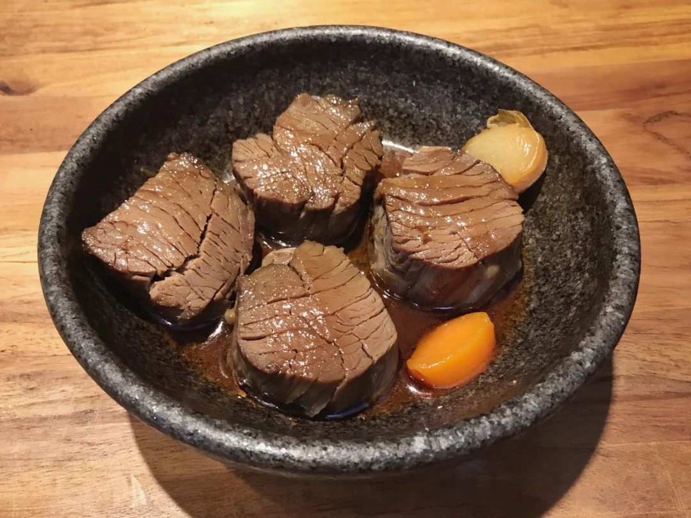
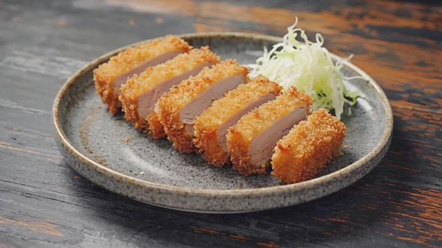
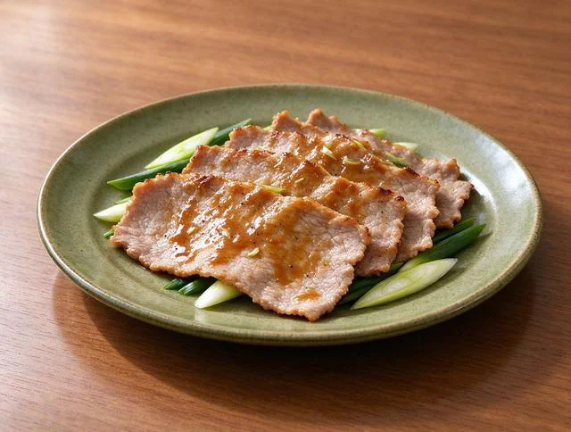
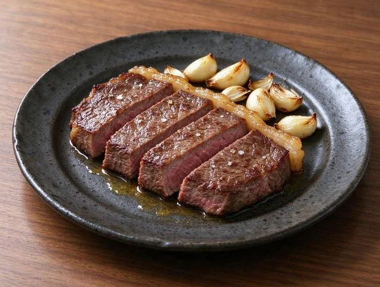
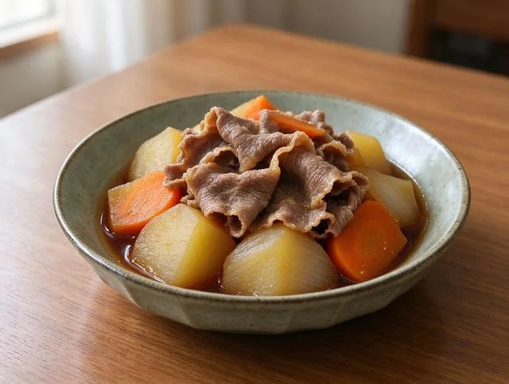

ちゃんと「いただく」方法
今日のお肉は、どう食べよう。焼き目が香ばしい一皿、ころもがさくっとする一皿、汁ごと味わう一皿。使いたいお肉や味から、作りたい料理を選べます。
写真から選ぶ、36品のレシピ
お肉の種類と作り方を組み合わせて、食べたい一皿を探せます。
料理の画像は、できあがりの参考として作ったイメージです。
36品のレシピがあります。
この組み合わせの料理は、まだありません。お肉か作り方を「すべて」にするか、「選び直す」でほかの料理を見られます。

牛すねを、スプーンでほどけるシチューに
牛すねを弱火で煮て、スプーンでほぐれるところを見きわめる。

スペアリブのたれは、ここで塗る
骨付き肉をじっくり焼き、仕上げにたれをぬって香ばしくする。

鶏ももの皮を、パリッと焼く
水気をふき、皮を下にして焼く。鶏ももの皮を香ばしくする作り方。

豚こまを香ばしい生姜焼きに
豚こまと玉ねぎを別に焼き、最後にしょうがだれをからめる。

豚ロースのとんかつを切ってみる
豚ロースの赤身と脂身を見て、衣をつけてカリッと揚げる。

豚こまが少し残ったら、ふたり分の豚汁に
豚こまが少し残ったら、大根とにんじんを合わせて二人分に。

砂肝のにんにく焼き
砂肝をにんにくと焼いて、こりっとした食感を楽しむ。

手羽先の塩焼き
骨の周りに肉がついた手羽先を、塩で香ばしく焼く。

鶏もものたれ焼き串
鶏ももの串を返しながら焼き、仕上げにたれをつける。

鶏レバーのしょうが煮
鶏レバーの下ごしらえをして、しょうがをきかせて煮る。

砂肝の塩串
砂肝を串に刺して塩で焼く。にんにく焼きとは違う一皿。

手羽のねぎスープ
手羽から出るうまみを、ねぎと一緒に汁で味わう。

手羽先のしょうゆ照り焼き
手羽先を焼き、しょうゆだれをからめて照りをつける。

しっとり酒蒸し鶏
鶏を酒で蒸すときの、厚みと火の通りの見方。

蒸し鶏ときゅうりのごま酢和え
蒸し鶏ときゅうりを、ごまの香る酢でさっぱりとあえる。

鶏のから揚げ、レモン添え
鶏をひと口大に揚げ、レモンをしぼって食べる。

豚ばらと大根のだし煮
豚ばらのうまみを、大根にだしごとしみこませる。

豚の角煮、からし添え
赤身と脂の重なる豚ばらをやわらかく煮て、からしを添える。

厚切りポークのバター焼き
厚切りの豚肉を焼いて、バターの香りで仕上げる。

千切りキャベツとロースかつ
衣をつけた豚ロースに、細く切ったキャベツを合わせる。

豚肩ロースのみそ焼き
豚の肩ロースに、みその香ばしい焼き目をつける。

豚肉のおろしだれ焼き
焼いた豚肉に、大根おろしを使ったたれを添える。

豚のしょうが焼きと千切りキャベツ
しょうがで焼いた豚肉を、千切りキャベツと一皿に盛る。

オーブンで焼くローストビーフ
牛肉のかたまりをオーブンで加熱し、切り分ける一皿。

牛ももステーキのからし添え
牛ももの赤身を焼き、からしを少し添えて味わう。

牛肉の薄切りレモン焼き
牛の薄切りを広げて焼き、レモンの香りを添える。

牛肉のしょうがしぐれ煮
牛の薄切りをしょうがと煮て、ごはんに合う味にする。

牛肉のねぎ塩炒め
牛肉のうまみに、ねぎと塩の香りを合わせる炒め物。

豚肉とキャベツのみそ炒め
豚肉をキャベツと炒め、みそだれを手早くからめる。

豚ヒレのソテー、しょうゆソース
脂の少ない豚ヒレを焼いて、しょうゆのソースを添える。

ひと口牛カツ
牛肉をひと口大に切り、衣をつけて揚げる。

厚切り牛の黒こしょう焼き
厚みのある牛肉を焼き、黒こしょうの香りを引き立てる。

牛肉と焼き豆腐のすき煮
牛肉を焼き豆腐と煮て、甘辛い煮汁をしみこませる。

にんにくチップのステーキ
牛のステーキに、薄く切って焼いたにんにくを合わせる。

牛薄切り肉の肉じゃが
牛薄切り肉とじゃがいもを煮る。煮くずれを抑える順番も。

牛すね肉と根菜の和風煮込み
牛すねと根菜を煮て、肉と野菜を和風の煮汁で味わう。
台所の基本

料理のあと、もう少し
- 煮こんだ牛すね肉は、牛のどこ？
よく動くあしの場所を見て、長く煮ると食感が変わる理由をたどれます。
- 骨つき肉は、どこの骨？
ぶたの体の絵で、スペアリブの骨と、そのまわりにある肉の位置を確かめられます。